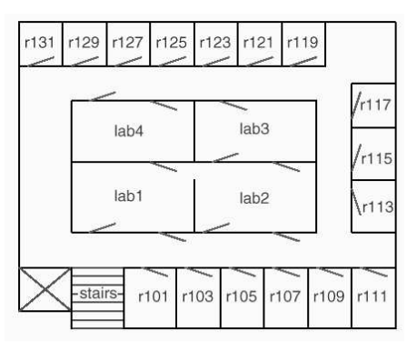

Tema 11: Agentes inteligentes (representación y razonamiento)
Índice
1. ¿Qué es la inteligencia computacional?
1.1. Inteligencia computacional y agentes inteligentes
- La inteligencia computacional es el estudio de los agentes inteligentes.
- Un agente es cualquiera que actúa en un entorno.
- Un agente inteligente es un agente que actúa
inteligentemente:
- sus acciones son adecuadas a sus objetivos y valores,
- es flexible a los cambios de entornos y objetivos,
- aprende de la experiencia,
- toma decisiones con conocimiento incompleto.
1.2. ¿Inteligencia artificial o computacional?
- Objetivos de la Inteligencia Computacional:
- Objetivo científico: comprender los principios del comportamiento inteligente
- Objetivo tecnológico: especificar métodos para diseñar sistemas inteligentes
- Analogía entre máquinas que vuelan y máquinas que piensan
1.3. Hipótesis central de la inteligencia comnputacional
- Hipótesis del sistema de símbolos:
- El razonamiento es manipulación de símbolos
- Razonamiento = Computación
- Tesis de Turing:
- Cualquier manipulación de símbolos puede realizarse mediante una máquina de Turing
2. Agentes en el mundo
- Mundo = Agente + Entorno (Poole–98 p. 8)
- Entradas del agente:
- Conocimiento previo del mundo.
- Experiencias anteriores de las que puede aprender.
- Objetivos a conseguir y valores sobre lo importante.
- Observaciones sobre su entorno y sobre sí mismo.
- Salidas del agente:
- Acciones
3. Representación y razonamiento
- Necesidad de representación de las entradas del agente: conocimiento
- Problema ⟹ Representación ⟹ Razonamiento
- Elementos de un Sistema de representación y razonamiento:
- Sintaxis: Lenguaje de comunicación con la computadora.
- Semántica: Manera de asignar significado al lenguaje.
- Cálculo: Procedimientos para obtener respuestas.
- Ejemplos de sistemas de representación y razonamiento:
- Lenguajes de bajo nivel: Fortran, C, Lisp, …
- Lenguaje natural
4. Ejemplos de agentes inteligentes
4.1. El robot repartidor
- El mundo del robot repartidor (Poole-98 p. 14)
 - Entradas del robot repartidor:
- Conocimiento previo: sus capacidades, objetos existentes, plano de la oficina.
- Experiencias anteriores: qué acciones son útiles y cuándo, efectos de sus acciones sobre su posición y su entorno.
- Objetivos: qué repartir y cuándo.
- Valores: para ordenar objetivos.
- Observaciones: sobre su entorno.
- Tareas del robot repartidor:
- Determinar la posición del despacho de una persona, del café, …
- Buscar un camino entre dos posiciones.
- Planificar cómo realizar varias tareas.
- Conjeturar la posición de una persona.
- Tomar decisiones con incertidumbre.
- Aprender de la experiencia.
- Percibir el mundo: saber dónde está, evitar obstáculos, …
4.2. El ayudante diagnosticador
- El sistema eléctrico (Poole-98 p. 16)

- Entradas del ayudante diagnosticador:
- Conocimiento previo: funcionamiento de las luces y las conexiones, síntomas de fallos, información aportada por los tests, efectos de las reparaciones.
- Experiencias anteriores: datos de casos anteriores.
- Objetivo: arreglar el sistema.
- Valores: para decidir entre reparar o sustituir componentes.
- Observaciones: síntomas del sistema.
- Tareas del ayudante diagnosticador:
- Determinar los efectos de los fallos y las intervenciones.
- Buscar en el espacio de posibles fallos.
- Explicar su razonamiento al usuario.
- Derivar posibles causas de fallos.
- Planificar realización de pruebas o tratamientos.
- Conjeturar problemas usando conocimiento por defecto.
- Razonar con incertidumbre y conocimiento incompleto.
- Aprender cómo asociar síntomas con fallos, efectos de los tratamientos, confianza de los tests.
4.3. El infobot
- Interacción del infobot con su entorno informático:
- Recibe preguntas en un lenguaje de alto nivel.
- Busca la información relevante.
- Presenta la información de manera legible.
- Entradas del infobot:
- Conocimiento previo: significado de las palabras, tipos de fuentes de información, cómo acceder a la información.
- Experiencias anteriores: dónde puede obtenerse información, la velocidad relativa de los servidores, prefencias del usuario.
- Objetivo: la información buscada.
- Valores: para decidir entre el volumen y la calidad de la información.
- Observaciones: qué información hay en el sitio actual, qué enlaces hay.
- Tareas del infobot:
- Derivar información que sólo está implícita en una base de conocimientos.
- Interactuar en lenguaje natural.
- Buscar entre bases de conocimientos la información.
- Representar el conocimiento eficientemente.
- Explicar el razonamiento justificativo de las respuestas.
- Tomar decisiones con conocimiento incompleto o contradictorio.
- Razonar por defecto sobre dónde encontrar información.
- Decidir entre calidad de la información y coste.
- Aprender prefencias del usuario y fuentes de información.
5. Uso de un sistemas de representación y razonamiento
5.1. Uso de un sistemas de representación y razonamiento
- Papel de la semántica en sistemas de representación y razonamiento
(Poole-98 p. 26)
- Elegir el dominio de la tarea o el mundo que se desea representar (interpretación deseada).
- Asociar una constante del lenguaje a cada individuo del mundo que se representa.
- Asociar un símbolo de predicado del lenguaje a cada relación que se desee representar.
- Decirle al sistemas de representación y razonamiento las cláusulas que son verdaderas en la interpretación deseada (axiomatización del dominio).
- Preguntar al sistemas de representación y razonamiento e interpretar las respuestas
6. Dominio del robot repartidor
- El mundo del robot repartidor (Poole-98 p. 14)
- Constantes:
h101,h103,h105,h107,h109,h111,h127,h129,h131 vecina_izquierda(H1,H2)se verifica si la habitaciónH1es la vecina izquierda de la habitaciónH2. Por ejemplo,?- vecina_izquierda(h105,h107). true. ?- vecina_izquierda(h106,h107). false. ?- vecina_izquierda(X,h107). X = h105. ?- vecina_izquierda(h105,X). X = h107. ?- vecina_izquierda(h106,X). false.
Su definición es
vecina_izquierda(h101,h103). vecina_izquierda(h103,h105). vecina_izquierda(h105,h107). vecina_izquierda(h107,h109). vecina_izquierda(h109,h111). vecina_izquierda(h131,h129). vecina_izquierda(h129,h127). vecina_izquierda(h127,h125).
\end{verbatim}\end{sesion}
vecina_derecha(H1,H2)que se verifica si la habitaciónH2es la vecina derecha de la habitaciónH1. Por ejemplo,?- vecina_derecha(h105,X). X = h103.
Su definición es
vecina_derecha(H1,H2) :- vecina_izquierda(H2,H1).
vecina(H1,H2)que se verifica si la habitaciónH1es vecina de la habitaciónH2. Por ejemplo,?- vecina(X,h105). X = h107 ; X = h103.
Su definición es
vecina(H1,H2) :- vecina_derecha(H1,H2). vecina(H1,H2) :- vecina_izquierda(H1,H2).
dos_a_la_derecha(H1,H2)que se verifica si la habitaciónH1está dos a la derecha de la habitaciónH2. Por ejemplo,?- dos_a_la_derecha(X,h105). X = h109
Su definición es
dos_a_la_derecha(H1,H2) :- vecina_derecha(H1,H), vecina_derecha(H,H2).
a_la_izquierda(H1,H2)que se verifica si la habitaciónH1está a la izquierda de la habitaciónH2. Por ejemplo,?- a_la_izquierda(X,h105). X = h103 ; X = h101 ; false.
Su definición es
a_la_izquierda(H1,H2) :- vecina_izquierda(H1,H2). a_la_izquierda(H1,H2) :- vecina_izquierda(H1,H), a_la_izquierda(H,H2).
7. Dominio del sistema eléctrico
- El sistema eléctrico (Poole-98 p. 16)
- Constantes:
- Luces:
l1,l2 - Interruptores:
i1,i2,i3 - Cortacircuitos:
cc1,cc2 - Cables:
c1,c2,c3,c4,c5,c6 - Enchufes:
e1,e2 - Toma de corriente:
entrada
- Luces:
- Base de conocimiento del sistema eléctrico
luz(L)se verifica siLes una luz.luz(l1). luz(l2).
abajo(I)se verifica si el interruptorIestá hacia abajo.abajo(i1).
arriba(I)se verifica si el interruptorIestá hacia arriba.arriba(i2). arriba(i3).
esta_bien(X)se verifica si la luz o el cortocircuitoXestá bien.esta_bien(l1). esta_bien(l2). esta_bien(cc1). esta_bien(cc2).
conectado(D1,D2)se verifica si los dispositivosD1yD2está conectados (de forma que puede fluir la corriente eléctrica deD2aD1).conectado(l1,c0). conectado(c0,c1) :- arriba(i2). conectado(c0,c2) :- abajo(i2). conectado(c1,c3) :- arriba(i1). conectado(c2,c3) :- abajo(i1). conectado(l2,c4). conectado(c4,c3) :- arriba(i3). conectado(e1,c3). conectado(c3,c5) :- esta_bien(cc1). conectado(e2,c6). conectado(c6,c5) :- esta_bien(cc2). conectado(c5,entrada).
tiene_corriente(D)se verifica si el dispositivoDtiene corrientetiene_corriente(D) :- conectado(D,D1), tiene_corriente(D1). tiene_corriente(entrada).
esta_encendida(L)se verifica si la luzLestá encendida.esta_encendida(L) :- luz(L), esta_bien(L), tiene_corriente(L).
Consultas
?- luz(l1). true. ?- luz(l6). false. ?- arriba(X). X = i2 ; X = i3. ?- conectado(l1,D). D = c0. ?- conectado(c0,D). D = c1 ; false. ?- conectado(c1,D). false. ?- conectado(D,c3). D = c2 ; D = c4 ; D = e1. ?- conectado(X,Y). X = l1, Y = c0 ; X = c0, Y = c1 ; X = c2, Y = c3 ; X = l2, Y = c4 ; X = c4, Y = c3 ; X = e1, Y = c3 ; X = c3, Y = c5 ; X = e2, Y = c6 ; X = c6, Y = c5 ; X = c5, Y = entrada. ?- tiene_corriente(D). D = c2 ; D = l2 ; D = c4 ; D = e1 ; D = c3 ; D = e2 ; D = c6 ; D = c5 ; D = entrada. ?- esta_encendida(X). X = l2.
8. Bibliografía
- D. Poole, A. Mackworth y R. Goebel.
Computational intelligence (A logical approach).
(Oxford University Press, 1998).
- Cap. 1: Computational intelligence and knowledge.
- Cap. 2: A representation and reasoning system.
- Cap. 3: Using definite knowledge.
- S. Russell y P. Norvig.
Artificial intelligence: A modern approach (4th ed.).
(Pearson, 2022).
- Cap. 1: Introduction .
- Cap. 2: Intelligent agents.
- Cap. 7: Logical agents .
- Cap. 10: Knowledge representation.